Webassembly for performant interactivity
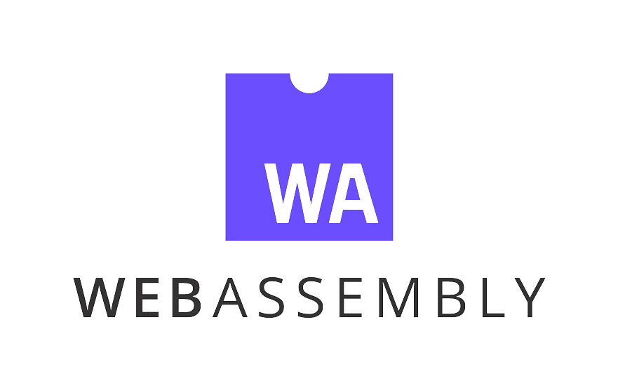
Mani Nilchiani, Empire.js 2018
Hello!
My name is Mani.
I'm a technologist, artist & musician,
currently working out of Pioneer Works tech lab on a VR interactive narrative.
Structure of this talk
- Software art
- Making tools
- Browser as platform
- Diffy.js
- Performance improvements
- Going low-level
- From Rust to JS via WASM
Software art
Procedural thinking, Interaction Design
Vera Molnar
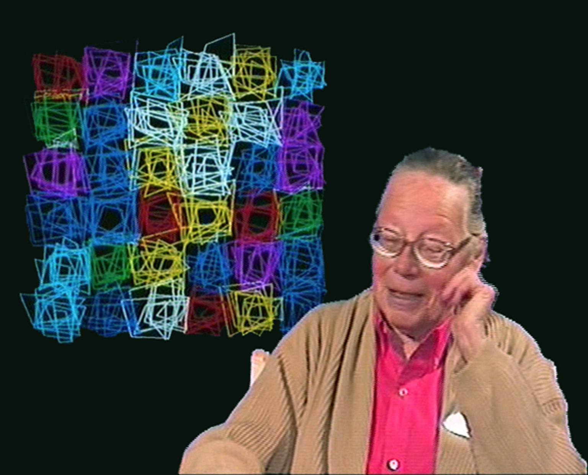
Manfred Mohr
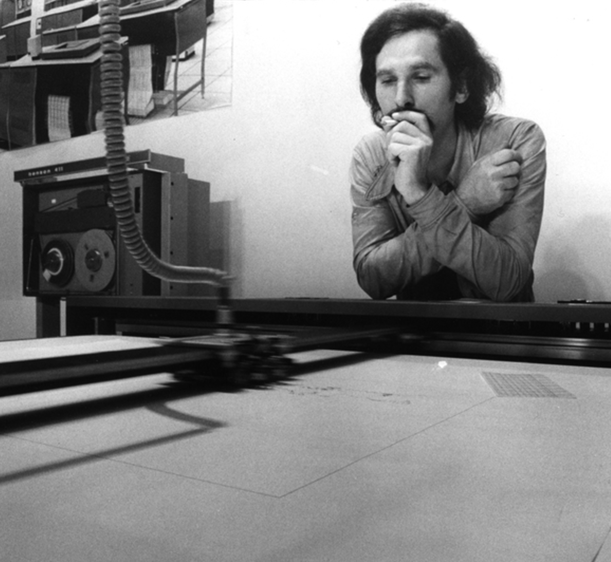Camille Utterback

Golan Levin & Collaborators

Posenet
 Source
Source
Making tools for art
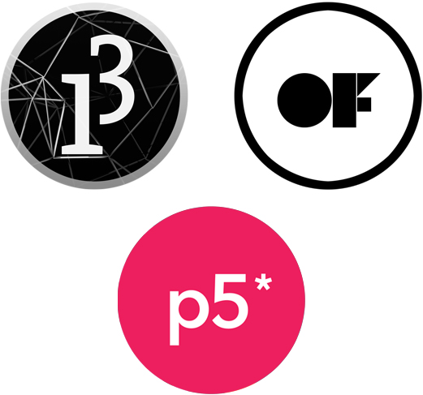 [clockwise from the top] Processing OpenFrameworks P5.jsDiffy.js
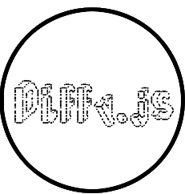 Motion detection for the browser RepoWhat Diffy does
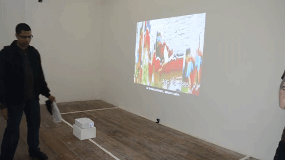 "On doing and un-doing" AboutWhat Diffy does contd.
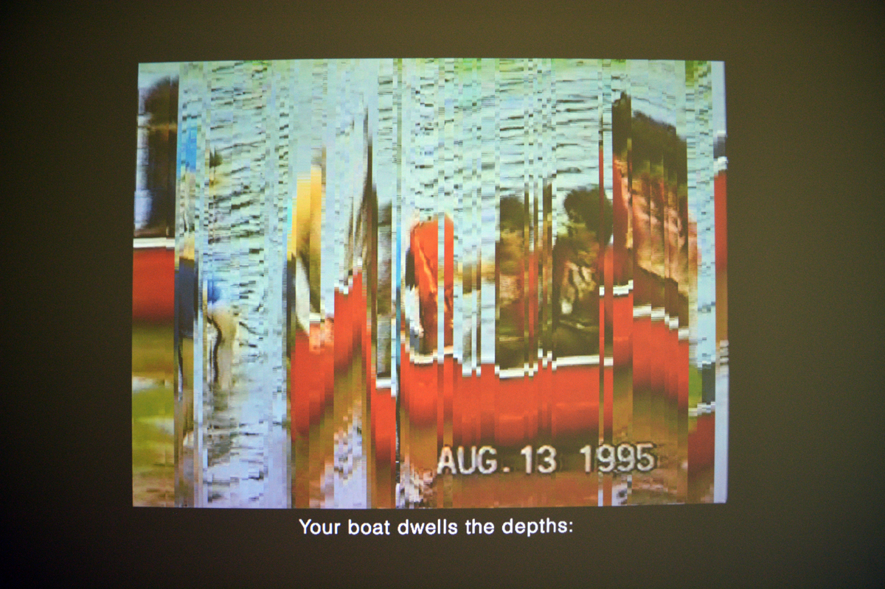 "On doing and un-doing" AboutWhat Diffy does contd.
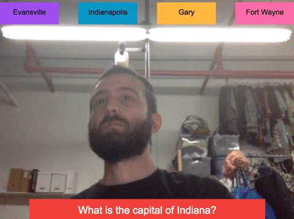 Point it out LaunchWhat Diffy does contd.
import { create } from 'diffyjs';
const diffy = create({
resolution: { x: 15, y: 10 },
sensitivity: 0.2,
threshold: 25,
debug: true,
containerClassName: 'my-diffy-container',
sourceDimensions: { w: 130, h: 100 },
onFrame: (matrix) => { /* stuff */ }
});
Diagram time
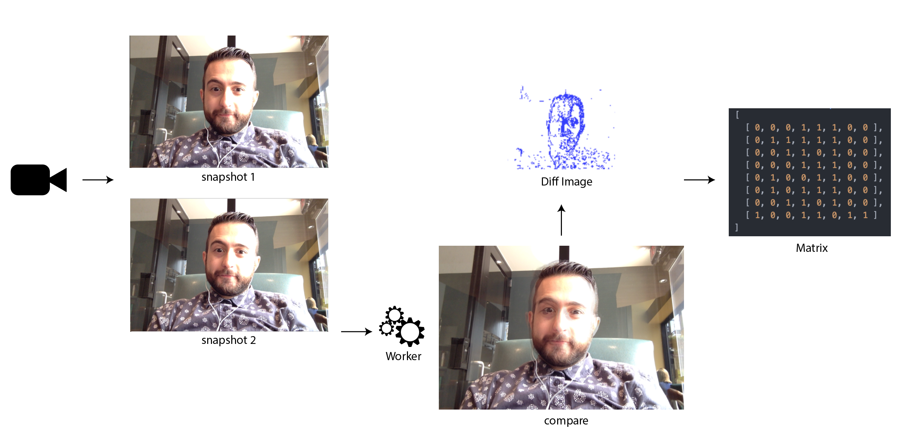Worker
compare(frame1, frame2) {
const data1 = frame1.data;
const data2 = frame2.data;
const length = data1.length;
const buffer = new ArrayBuffer(length);
this.worker.postMessage({
buffer,
data1,
data2,
sensitivity: this.sensitivity,
threshold: this.threshold,
width: this.sourceWidth,
height: this.sourceHeight
});
}
Performance bottleneck
Diffy won't scale well on larger matrices,
because the Big-O time complexity is O(n²)
Raytracing example
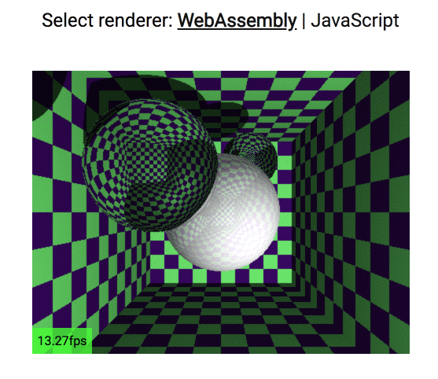 SourceWhat exactly is wasm
- Binary instruction format
- Portable target for compilation of high-level languages like C/C++/Rust
- Web assembly makes it possible for library authors and application developers to code in languages that are more consistently performant but then to have that code run on the web just like JavaScript does; And to integrate with existing JS
- Shares memory with JS (ArrayBuffers)
Why is wasm faster?
- It takes less time to download because it is more compact
- It is faster to parse. JS is parsed from source into AST, and then to an intermediary representation called "Byte code" which is specific to the JS runtime we use. WebAssembly is already byte code. It only needs to be decoded, and decoding is faster than parsing.
- Compilation happens ahead of time, before the file was uploaded
- Compilation happens ahead of time, before the file was uploaded, no JIT necessary
- we don't need to worry about Garbage Collection because languages that target WebAssembly use manual memory management.
Rust to wasm workflow
- Write Rust code
- Compile and target wasm
- It's a compiled target. We can use low-level languages with C or Rust to emit WASM
- Other compile targets such as asm.js existed before
- compile commands here
- WASM only supports numbers
- Needs glue code
- Webpack
A very basic example
Rust to WASM workflow
- It's a compiled target. We can use low-level languages with C or Rust to emit WASM
- Other compile targets such as asm.js existed before
- compile commands here
- WASM only supports numbers
- Needs glue code
- Webpack
Starting with Rust
> cargo new my-awesome-project
Created binary (application) `my-awesome-project` project
Project scaffolding
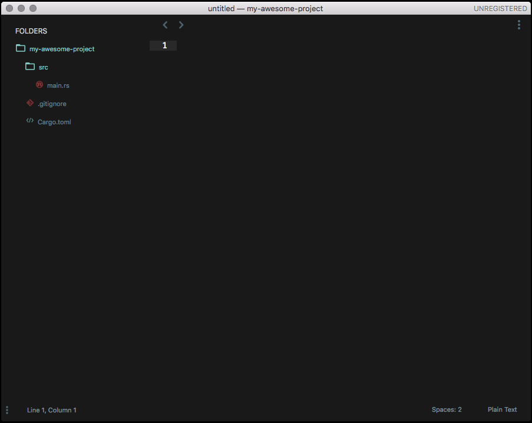Dependencies
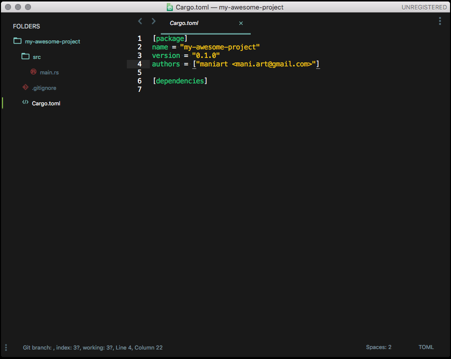main.rs
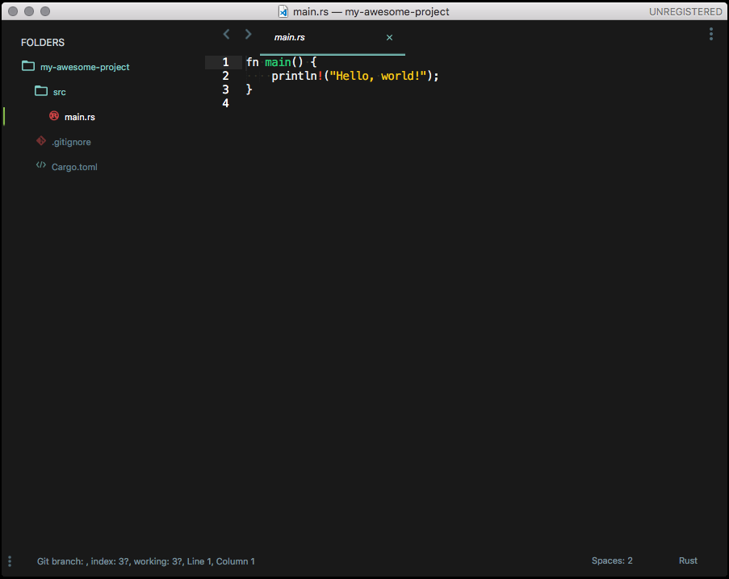Build & Execute
> cargo run
Compiling my-awesome-project v0.1.0 (file:///Users/maninilchiani/Workspace/rust/my-awesome-project)
Finished dev [unoptimized + debuginfo] target(s) in 1.62s
Running `target/debug/my-awesome-project`
Hello, world!
Build
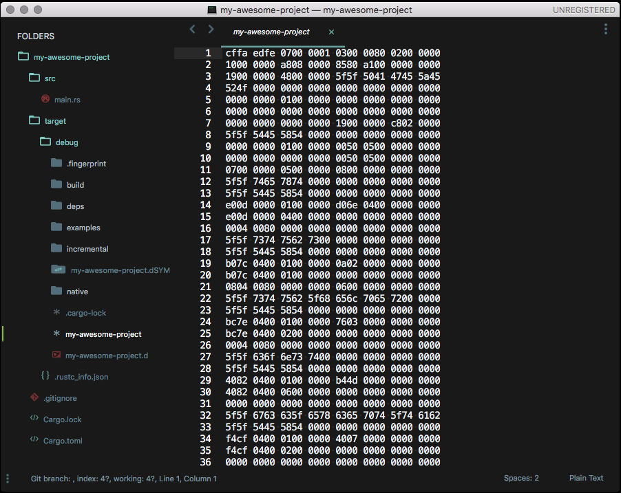wasm-bindgen
Facilitates high-level interactions between wasm modules and JavaScript. Generates glue code for JS and Rust interoperability.